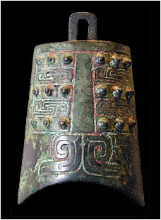

BellChinese bells are unlike Western bells as they do not have a clapper inside. Instead they are struck on the flat panel between the sets of round knobs, or else at the lip of the bell. The shape of the bell means that when it is struck two notes sound together. 
Bronze bell
|